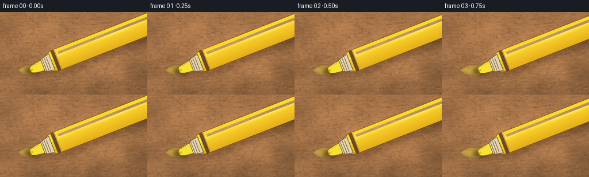
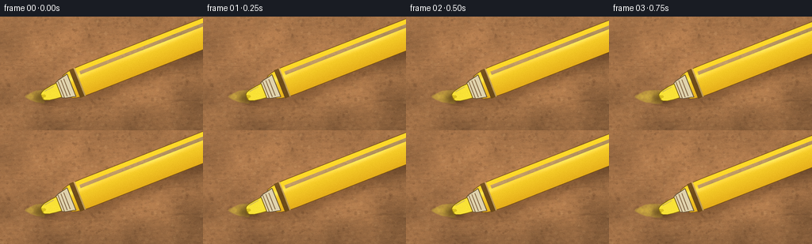
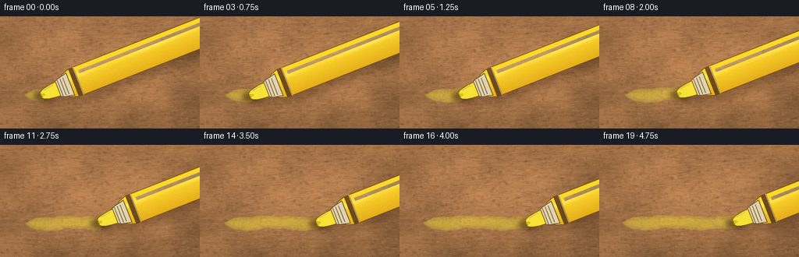
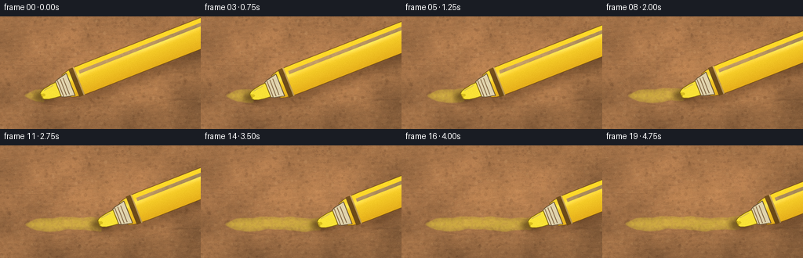

CODING AGENTS AS PIXEL WORLD MODELS
traex/DeepSeek-V4.1-Flash · phygen_034
点击播放 · 原生 RGB 像素
逐轮保存的候选
回放视频、检查图与代码变化。
每份候选均可单独播放。实际图片检查记录在下方工具轨迹中。
候选 01播放与检查图
点击播放 · 原生 RGB 像素


展开代码变化
--- 上一保存版本
+++ 本次保存版本
@@ -0,0 +1,453 @@
+from pathlib import Path
+import json
+import math
+
+import cv2
+import numpy as np
+from PIL import Image, ImageDraw, ImageFilter
+
+import artifact_io
+
+
+CASE_DIR = Path(__file__).resolve().parent
+SPEC = json.loads((CASE_DIR / "task_spec.json").read_text())
+W = int(SPEC["width"])
+H = int(SPEC["height"])
+N = int(SPEC["frames"])
+FPS = float(SPEC["fps"])
+
+# Render at 4x and downsample for clean chisel-tip and ink boundaries.
+SS = 4
+RW = W * SS
+RH = H * SS
+RNG = np.random.default_rng(34031)
+
+
+def smoothstep(value):
+ value = np.clip(value, 0.0, 1.0)
+ return value * value * (3.0 - 2.0 * value)
+
+
+def noise_field(height, width, cell, seed):
+ """Smooth value noise, rendered at the working resolution."""
+ local_rng = np.random.default_rng(seed)
+ grid_h = max(3, int(math.ceil(height / cell)) + 3)
+ grid_w = max(3, int(math.ceil(width / cell)) + 3)
+ grid = local_rng.random((grid_h, grid_w), dtype=np.float32)
+ image = Image.fromarray((grid * 255).astype(np.uint8), mode="L")
+ image = image.resize((width, height), Image.Resampling.BICUBIC)
+ return np.asarray(image, dtype=np.float32) / 127.5 - 1.0
+
+
+def make_cardboard():
+ yy, xx = np.mgrid[0:RH, 0:RW].astype(np.float32)
+ u = xx / RW
+ v = yy / RH
+
+ macro = noise_field(RH, RW, 74 * SS, 11)
+ medium = noise_field(RH, RW, 22 * SS, 12)
+ fine = noise_field(RH, RW, 4.5 * SS, 13)
+ pin = noise_field(RH, RW, 1.25 * SS, 14)
+
+ # Warm corrugated-board paper with broad pulp variation and fine tooth.
+ shade = (
+ 1.025
+ - 0.105 * v
+ - 0.035 * u
+ + 0.075 * macro
+ + 0.045 * medium
+ + 0.028 * fine
+ + 0.018 * pin
+ )
+ ridge_phase = yy + 0.055 * xx + 3.5 * SS * macro
+ ridges = (
+ np.sin(ridge_phase * (2.0 * math.pi / (6.2 * SS)))
+ + 0.35 * np.sin(ridge_phase * (2.0 * math.pi / (2.35 * SS)) + 0.8)
+ )
+ shade += 0.011 * ridges
+
+ base = np.empty((RH, RW, 3), dtype=np.float32)
+ base[..., 0] = 173.0 * shade
+ base[..., 1] = 121.0 * shade
+ base[..., 2] = 76.0 * shade
+
+ # Uneven warm illumination from the upper-left.
+ light = np.exp(
+ -(
+ ((u - 0.18) / 0.72) ** 2
+ + ((v - 0.05) / 0.95) ** 2
+ )
+ )
+ base[..., 0] += 16.0 * light
+ base[..., 1] += 11.0 * light
+ base[..., 2] += 5.0 * light
+
+ texture = Image.fromarray(np.clip(base, 0, 255).astype(np.uint8), mode="RGB")
+ draw = ImageDraw.Draw(texture, "RGBA")
+
+ # Short paper fibers and darker recycled-pulp flecks.
+ for _ in range(7800):
+ x = float(RNG.uniform(-10, RW + 10))
+ y = float(RNG.uniform(-10, RH + 10))
+ length = float(RNG.uniform(2.5, 13.0) * SS)
+ angle = float(RNG.normal(-0.03, 0.12))
+ dx = math.cos(angle) * length
+ dy = math.sin(angle) * length
+ if RNG.random() < 0.56:
+ color = (218, 166, 111, int(RNG.integers(8, 28)))
+ else:
+ color = (80, 49, 27, int(RNG.integers(7, 24)))
+ draw.line((x, y, x + dx, y + dy), fill=color, width=int(RNG.integers(1, 2 * SS)))
+
+ for _ in range(1500):
+ x = float(RNG.uniform(0, RW))
+ y = float(RNG.uniform(0, RH))
+ radius = float(RNG.uniform(0.5, 2.2) * SS)
+ alpha = int(RNG.integers(8, 31))
+ color = (73, 43, 22, alpha) if RNG.random() < 0.66 else (232, 185, 126, alpha)
+ draw.ellipse((x - radius, y - radius, x + radius, y + radius), fill=color)
+
+ # A few shallow handling marks keep the board from reading as flat paper.
+ for _ in range(18):
+ x = float(RNG.uniform(0, RW))
+ y = float(RNG.uniform(0, RH))
+ length = float(RNG.uniform(20, 95) * SS)
+ bend = float(RNG.uniform(-9, 9) * SS)
+ draw.line(
+ (x, y, x + length * 0.55, y + bend, x + length, y + bend * 0.25),
+ fill=(66, 39, 20, int(RNG.integers(7, 17))),
+ width=int(RNG.integers(1, 3 * SS)),
+ )
+
+ arr = np.asarray(texture, dtype=np.float32)
+ edge = np.clip(np.minimum.reduce([xx / RW, yy / RH, (RW - xx) / RW, (RH - yy) / RH]), 0, 1)
+ vignette = 0.89 + 0.11 * smoothstep(edge / 0.34)
+ arr *= vignette[..., None]
+
+ # Small cool reflection on the waxy paper surface.
+ arr[..., 2] += 2.5 * light
+ return np.clip(arr, 0, 255).astype(np.uint8)
+
+
+CARDBOARD = make_cardboard()
+
+
+def tip_position(index):
+ t = index / max(1, N - 1)
+ eased = 0.14 * t + 0.86 * smoothstep(t)
+ x = 55.5 + 119.0 * eased + 1.05 * math.sin(2.0 * math.pi * t * 1.15 + 0.25)
+ y = 99.5 + 1.15 * math.sin(2.0 * math.pi * t * 1.4 + 0.4) - 1.0 * eased
+ return x, y
+
+
+def stroke_center(x):
+ return (
+ 99.9
+ + 1.05 * math.sin((x - 34.0) * 0.075 + 0.15)
+ + 0.45 * math.sin((x - 34.0) * 0.19 + 1.7)
+ )
+
+
+def path_arrays(start_x, end_x):
+ count = max(2, int((end_x - start_x) * SS) + 1)
+ xs = np.linspace(start_x * SS, end_x * SS, count, dtype=np.float32)
+ centers = np.array([stroke_center(float(x) / SS) for x in xs], dtype=np.float32) * SS
+ return xs, centers
+
+
+def make_stroke_mask(start_x, end_x, width, blur=0.7, taper=True):
+ mask = Image.new("L", (RW, RH), 0)
+ draw = ImageDraw.Draw(mask)
+ xs, centers = path_arrays(start_x, end_x)
+ phase = xs / (17.0 * SS)
+ half = (
+ width * SS
+ + (0.55 * SS) * np.sin(phase * 1.9 + 0.3)
+ + (0.27 * SS) * np.sin(phase * 5.7 + 1.4)
+ )
+ if taper:
+ taper_amount = np.clip((xs - start_x * SS) / (12.0 * SS), 0.0, 1.0)
+ half *= 0.26 + 0.74 * taper_amount
+ top = np.column_stack([xs, centers - half])
+ bottom = np.column_stack([xs[::-1], centers[::-1] + half[::-1]])
+ draw.polygon([tuple(point) for point in np.vstack([top, bottom])], fill=255)
+ start_radius = float(half[0])
+ draw.ellipse(
+ (
+ start_x * SS - start_radius,
+ centers[0] - start_radius,
+ start_x * SS + start_radius,
+ centers[0] + start_radius,
+ ),
+ fill=255,
+ )
+ if blur > 0:
+ mask = mask.filter(ImageFilter.GaussianBlur(blur * SS))
+ return np.asarray(mask, dtype=np.float32) / 255.0
+
+
+def local_point(tip, t, u, angle):
+ ca, sa = math.cos(angle), math.sin(angle)
+ return tip[0] * SS + t * SS * ca - u * SS * sa, tip[1] * SS + t * SS * sa + u * SS * ca
+
+
+def local_polygon(tip, points, angle):
+ return [local_point(tip, t, u, angle) for t, u in points]
+
+
+def body_width(t):
+ return 19.0 + 1.25 * smoothstep((t - 34.0) / 155.0) - 1.0 * smoothstep((t - 230.0) / 100.0)
+
+
+def make_marker(tip, angle):
+ marker = Image.new("RGBA", (RW, RH), (0, 0, 0, 0))
+ body_mask = Image.new("L", (RW, RH), 0)
+ body_draw = ImageDraw.Draw(body_mask)
+ body_points = [
+ (31.0, -15.2),
+ (42.0, -19.0),
+ (292.0, -19.0),
+ (330.0, -18.2),
+ (330.0, 18.2),
+ (292.0, 19.0),
+ (42.0, 19.0),
+ (31.0, 15.2),
+ ]
+ body_draw.polygon(local_polygon(tip, body_points, angle), fill=255)
+ body_mask_arr = np.asarray(body_mask, dtype=np.float32) / 255.0
+
+ yy, xx = np.mgrid[0:RH, 0:RW].astype(np.float32)
+ ca, sa = math.cos(angle), math.sin(angle)
+ dx = xx - tip[0] * SS
+ dy = yy - tip[1] * SS
+ t_coord = (dx * ca + dy * sa) / SS
+ u_coord = (-dx * sa + dy * ca) / SS
+ width_here = np.maximum(1.0, body_width(t_coord))
+ v_coord = np.clip(u_coord / width_here, -1.0, 1.0)
+
+ body_rgb = np.empty((RH, RW, 3), dtype=np.float32)
+ shade = 1.075 - 0.19 * (v_coord + 1.0) * 0.5
+ specular = np.exp(-((v_coord + 0.39) / 0.18) ** 2)
+ specular *= 0.72 + 0.28 * np.sin(t_coord * 0.045 + 0.7)
+ body_rgb[..., 0] = 249.0 * shade + 9.0 * specular
+ body_rgb[..., 1] = 205.0 * shade + 26.0 * specular
+ body_rgb[..., 2] = 39.0 * shade + 50.0 * specular
+
+ # Slightly warmer color toward the lower edge of the plastic barrel.
+ body_rgb[..., 0] += 9.0 * np.clip(v_coord, 0, 1)
+ body_rgb[..., 1] -= 9.0 * np.clip(v_coord, 0, 1)
+ body_rgb[..., 2] -= 8.0 * np.clip(v_coord, 0, 1)
+
+ body_rgba = np.zeros((RH, RW, 4), dtype=np.uint8)
+ body_rgba[..., :3] = np.clip(body_rgb, 0, 255).astype(np.uint8)
+ body_rgba[..., 3] = (body_mask_arr * 255).astype(np.uint8)
+ body_layer = Image.fromarray(body_rgba, mode="RGBA")
+ marker.alpha_composite(body_layer)
+
+ draw = ImageDraw.Draw(marker, "RGBA")
+ body_outline = local_polygon(tip, body_points, angle)
+ draw.line(body_outline + [body_outline[0]], fill=(116, 77, 12, 205), width=max(1, SS), joint="curve")
+
+ # Darker seam and a restrained printed band make the barrel read as a tool.
+ for t0, t1, color, alpha in [
+ (41.5, 47.5, (96, 66, 14), 190),
+ (47.5, 49.0, (255, 238, 126), 100),
+ (282.0, 288.0, (104, 70, 13), 155),
+ ]:
+ band = local_polygon(
+ tip,
+ [
+ (t0, -body_width(t0)),
+ (t1, -body_width(t1)),
+ (t1, body_width(t1)),
+ (t0, body_width(t0)),
+ ],
+ angle,
+ )
+ draw.polygon(band, fill=(*color, alpha))
+
+ # Long, soft plastic reflection following the axis.
+ highlight_poly = local_polygon(
+ tip,
+ [
+ (53.0, -12.8),
+ (276.0, -12.8),
+ (276.0, -8.5),
+ (53.0, -8.5),
+ ],
+ angle,
+ )
+ draw.polygon(highlight_poly, fill=(255, 249, 170, 72))
+
+ # Narrow collar between the nib and barrel.
+ collar_points = [
+ (20.0, -10.2),
+ (24.0, -12.2),
+ (33.5, -14.2),
+ (37.0, -15.2),
+ (37.0, 15.2),
+ (33.5, 14.2),
+ (24.0, 12.2),
+ (20.0, 10.2),
+ ]
+ collar = local_polygon(tip, collar_points, angle)
+ draw.polygon(collar, fill=(224, 211, 173, 255))
+ draw.line(collar + [collar[0]], fill=(93, 78, 54, 210), width=max(1, SS))
+ for t0 in (23.0, 27.0, 31.0):
+ draw.line(
+ [
+ local_point(tip, t0, -11.2, angle),
+ local_point(tip, t0, 11.2, angle),
+ ],
+ fill=(118, 100, 69, 155),
+ width=max(1, SS),
+ )
+
+ # Fluorescent chisel nib with an ink-darkened contact face.
+ nib_points = [
+ (-3.1, -3.2),
+ (-1.0, -5.4),
+ (3.8, -7.4),
+ (12.0, -8.8),
+ (20.2, -9.5),
+ (20.2, 9.5),
+ (12.0, 8.8),
+ (3.8, 7.4),
+ (-1.0, 5.4),
+ (-3.1, 3.2),
+ ]
+ nib = local_polygon(tip, nib_points, angle)
+ draw.polygon(nib, fill=(249, 226, 54, 255))
+ draw.line(nib + [nib[0]], fill=(130, 102, 13, 235), width=max(1, SS), joint="curve")
+ draw.line(
+ [local_point(tip, -2.0, -2.8, angle), local_point(tip, -2.0, 2.8, angle)],
+ fill=(181, 151, 23, 230),
+ width=SS,
+ )
+ draw.line(
+ [local_point(tip, 3.0, -5.4, angle), local_point(tip, 16.0, -7.0, angle)],
+ fill=(255, 247, 132, 125),
+ width=SS,
+ )
+
+ # A small wet bead at the exact contact point.
+ draw.ellipse(
+ (
+ tip[0] * SS - 2.4 * SS,
+ tip[1] * SS - 1.7 * SS,
+ tip[0] * SS + 2.4 * SS,
+ tip[1] * SS + 1.7 * SS,
+ ),
+ fill=(237, 211, 29, 215),
+ )
+ return marker
+
+
+def render_frame(index):
+ base = CARDBOARD.astype(np.float32)
+ tip = tip_position(index)
+
+ # The trail begins just before the nib and grows with the stroke.
+ start_x = 34.0
+ stroke_end = tip[0] + 0.5
+ broad_mask = make_stroke_mask(start_x, stroke_end, width=8.0, blur=0.85)
+ core_mask = make_stroke_mask(start_x + 2.0, stroke_end, width=4.8, blur=1.1, taper=True)
+
+ # Ragged capillary edge; the interior remains dense.
+ edge_noise = noise_field(RH, RW, 2.2 * SS, 903)
+ ink_alpha = np.clip((broad_mask - 0.16) * 1.52, 0.0, 1.0)
+ ink_alpha *= np.clip(0.84 + 0.20 * edge_noise + 0.06 * broad_mask, 0.70, 1.0)
+ ink_alpha = np.clip(ink_alpha * 0.72 + core_mask * 0.20, 0.0, 0.90)
+
+ ink_rgb = base * 0.45 + np.array([248.0, 225.0, 59.0], dtype=np.float32) * 0.55
+ ink_rgb *= 0.94 + 0.07 * (base[..., 1:2] / 180.0)
+ base = base * (1.0 - ink_alpha[..., None]) + ink_rgb * ink_alpha[..., None]
+
+ # Slightly darker wet boundary gives the fresh ink a little body.
+ edge_outer = np.clip(broad_mask - core_mask, 0.0, 1.0)
+ base *= 1.0 - 0.035 * edge_outer[..., None]
+
+ frame = Image.fromarray(np.clip(base, 0, 255).astype(np.uint8), mode="RGB")
+ marker = make_marker(tip, math.radians(-21.5))
+
+ # Projected soft shadow, then a tighter contact shadow.
+ marker_alpha = marker.getchannel("A")
+ shadow_alpha = marker_alpha.filter(ImageFilter.GaussianBlur(5.2 * SS))
+ shadow_layer = Image.new("RGBA", (RW, RH), (50, 27, 9, 255))
+ shadow_layer.putalpha(shadow_alpha.point(lambda value: int(value * 0.30)))
+ shadow_layer = shadow_layer.transform(
+ (RW, RH),
+ Image.Transform.AFFINE,
+ (1, 0, -5.0 * SS, 0, 1, -8.0 * SS),
+ resample=Image.Resampling.BILINEAR,
+ )
+ frame = Image.alpha_composite(frame.convert("RGBA"), shadow_layer).convert("RGB")
+
+ contact_shadow = Image.new("L", (RW, RH), 0)
+ contact_draw = ImageDraw.Draw(contact_shadow)
+ contact_draw.ellipse(
+ (
+ tip[0] * SS - 13 * SS,
+ tip[1] * SS - 5 * SS,
+ tip[0] * SS + 13 * SS,
+ tip[1] * SS + 9 * SS,
+ ),
+ fill=145,
+ )
+ contact_shadow = contact_shadow.filter(ImageFilter.GaussianBlur(3.2 * SS))
+ contact_layer = Image.new("RGBA", (RW, RH), (52, 31, 12, 255))
+ contact_layer.putalpha(contact_shadow)
+ frame = Image.alpha_composite(frame.convert("RGBA"), contact_layer).convert("RGB")
+
+ frame = Image.alpha_composite(frame.convert("RGBA"), marker).convert("RGB")
+
+ # Very gentle handheld drift keeps the five-second shot alive.
+ t = index / max(1, N - 1)
+ scale = 1.004 + 0.008 * t
+ shift_x = 1.8 * math.sin(2.0 * math.pi * t * 0.62)
+ shift_y = 0.8 * math.sin(2.0 * math.pi * t * 0.47 + 0.7)
+ matrix = np.array(
+ [
+ [scale, 0.0, (1.0 - scale) * RW / 2.0 + shift_x * SS],
+ [0.0, scale, (1.0 - scale) * RH / 2.0 + shift_y * SS],
+ ],
+ dtype=np.float32,
+ )
+ warped = cv2.warpAffine(
+ np.asarray(frame),
+ matrix,
+ (RW, RH),
+ flags=cv2.INTER_CUBIC,
+ borderMode=cv2.BORDER_REFLECT_101,
+ )
+
+ final = Image.fromarray(warped, mode="RGB").resize((W, H), Image.Resampling.LANCZOS)
+ final_arr = np.asarray(final, dtype=np.float32)
+
+ # A restrained final grain avoids banding after the downsample.
+ grain = RNG.normal(0.0, 1.25, size=(H, W, 1)).astype(np.float32)
+ final_arr += grain
+ return np.clip(final_arr, 0, 255).astype(np.uint8)
+
+
+def main():
+ frames = np.stack([render_frame(index) for index in range(N)], axis=0)
+ artifact_io.save(frames, CASE_DIR)
+
+ video_path = CASE_DIR / "video.mp4"
+ writer = cv2.VideoWriter(
+ str(video_path),
+ cv2.VideoWriter_fourcc(*"mp4v"),
+ FPS,
+ (W, H),
+ )
+ if not writer.isOpened():
+ raise RuntimeError("Could not open video encoder")
+ for frame in frames:
+ writer.write(cv2.cvtColor(frame, cv2.COLOR_RGB2BGR))
+ writer.release()
+ print(f"Generated {N} frames at {W}x{H}, {FPS:g} fps: {video_path}")
+
+
+if __name__ == "__main__":
+ main()
候选 02播放与检查图
点击播放 · 原生 RGB 像素


展开代码变化
--- 上一保存版本
+++ 本次保存版本
@@ -86,17 +86,17 @@
draw = ImageDraw.Draw(texture, "RGBA")
# Short paper fibers and darker recycled-pulp flecks.
- for _ in range(7800):
+ for _ in range(5200):
x = float(RNG.uniform(-10, RW + 10))
y = float(RNG.uniform(-10, RH + 10))
- length = float(RNG.uniform(2.5, 13.0) * SS)
+ length = float(RNG.uniform(2.0, 8.0) * SS)
angle = float(RNG.normal(-0.03, 0.12))
dx = math.cos(angle) * length
dy = math.sin(angle) * length
if RNG.random() < 0.56:
- color = (218, 166, 111, int(RNG.integers(8, 28)))
+ color = (218, 166, 111, int(RNG.integers(5, 18)))
else:
- color = (80, 49, 27, int(RNG.integers(7, 24)))
+ color = (80, 49, 27, int(RNG.integers(5, 17)))
draw.line((x, y, x + dx, y + dy), fill=color, width=int(RNG.integers(1, 2 * SS)))
for _ in range(1500):
@@ -205,12 +205,22 @@
body_draw = ImageDraw.Draw(body_mask)
body_points = [
(31.0, -15.2),
- (42.0, -19.0),
+ (38.0, -17.4),
+ (47.0, -18.7),
+ (62.0, -19.0),
(292.0, -19.0),
- (330.0, -18.2),
- (330.0, 18.2),
+ (317.0, -18.4),
+ (328.0, -16.8),
+ (334.0, -13.8),
+ (336.0, -9.0),
+ (336.0, 9.0),
+ (334.0, 13.8),
+ (328.0, 16.8),
+ (317.0, 18.4),
(292.0, 19.0),
- (42.0, 19.0),
+ (62.0, 19.0),
+ (47.0, 18.7),
+ (38.0, 17.4),
(31.0, 15.2),
]
body_draw.polygon(local_polygon(tip, body_points, angle), fill=255)
@@ -237,6 +247,7 @@
body_rgb[..., 0] += 9.0 * np.clip(v_coord, 0, 1)
body_rgb[..., 1] -= 9.0 * np.clip(v_coord, 0, 1)
body_rgb[..., 2] -= 8.0 * np.clip(v_coord, 0, 1)
+ body_rgb *= np.clip(body_mask_arr[..., None] * 1.8 + 0.55, 0.0, 1.0)
body_rgba = np.zeros((RH, RW, 4), dtype=np.uint8)
body_rgba[..., :3] = np.clip(body_rgb, 0, 255).astype(np.uint8)
@@ -246,7 +257,7 @@
draw = ImageDraw.Draw(marker, "RGBA")
body_outline = local_polygon(tip, body_points, angle)
- draw.line(body_outline + [body_outline[0]], fill=(116, 77, 12, 205), width=max(1, SS), joint="curve")
+ draw.line(body_outline + [body_outline[0]], fill=(116, 77, 12, 180), width=max(1, SS), joint="curve")
# Darker seam and a restrained printed band make the barrel read as a tool.
for t0, t1, color, alpha in [
可观测工具轨迹
实际执行的命令与返回图片。
命令 1exit 0
/bin/bash -c "pwd && rg --files -g '"'!*'"\\.git*' | sed -n '1,200p'"
命令 2exit 0
/bin/bash -c "sed -n '1,240p' prompt.txt"
命令 3exit 0
/bin/bash -c "sed -n '1,280p' GENERATION_RULES.md"
命令 4exit 0
/bin/bash -c 'cat task_spec.json'
命令 5exit 0
/bin/bash -c "sed -n '1,260p' artifact_io.py"
命令 6exit 0
/bin/bash -c "sed -n '1,240p' player_template.html"
命令 7exit 0
/bin/bash -c "python - <<'PY' import importlib.util for m in ['numpy','PIL','cv2','imageio','moviepy']: print(m, bool(importlib.util.find_spec(m))) PY"
命令 8exit 0
/bin/bash -c 'python generate.py'
命令 9exit 0
/bin/bash -c "python - <<'PY' import generate for i in [0,4,9,14,19]: print(i, generate.tip_position(i)) PY"
命令 10exit 0
/bin/bash -c 'python generate.py'
命令 11exit 127
/bin/bash -c 'ffprobe -v error -select_streams v:0 -show_entries stream=codec_name,width,height,r_frame_rate,nb_frames,duration,pix_fmt -of default=noprint_wrappers=1 video.mp4'
命令 12exit 0
/bin/bash -c 'ls -lh video.mp4 pixels.npz index.html inspection.png frames/00.png frames/19.png'
命令 13exit 0
/bin/bash -c "python - <<'PY'
import numpy as np
from PIL import Image
from pathlib import Path
p=Path('frames')
a=np.stack([np.asarray(Image.open(f),dtype=np.float32) for f in sorted(p.glob('*.png'))])
print('shape',a.shape,'dtype',a.dtype,'range',int(a.min()),int(a.max()))
print('means', [round(float(x),2) for x in a.mean(axis=(1,2,3))])
d=np.abs(np.diff(a,axis=0)).mean(axis=(1,2,3))
print('motion_mae', [round(float(x),3) for x in d])
print('nonblack', bool((a.max(axis=3)>0).all()), 'unique_last', len(np.unique(a[-1].reshape(-1,3),axis=0)))
PY"命令 14exit 0
/bin/bash -c "python - <<'PY'
import cv2, json, numpy as np
from pathlib import Path
cap=cv2.VideoCapture('video.mp4')
count=int(cap.get(cv2.CAP_PROP_FRAME_COUNT)); w=int(cap.get(cv2.CAP_PROP_FRAME_WIDTH)); h=int(cap.get(cv2.CAP_PROP_FRAME_HEIGHT)); fps=cap.get(cv2.CAP_PROP_FPS)
frames=[]
while True:
ok, f=cap.read()
if not ok: break
frames.append(f)
cap.release()
print({'frames_read':len(frames),'reported_frames':count,'width':w,'height':h,'fps':fps,'duration_s':len(frames)/fps,'min':int(min(x.min() for x in frames)),'max':int(max(x.max() for x in frames))})
print('artifact_files', {p.name:p.exists() for p in [Path('generate.py'),Path('video.mp4'),Path('pixels.npz'),Path('index.html'),Path('frames/00.png'),Path('frames/19.png')]})
PY"视觉工具实际返回图片 1

视觉工具实际返回图片 2
视觉工具实际返回图片 3

视觉工具实际返回图片 4

保存候选 2 份；完成命令 14 次；可验证图片返回 4 张。原始 API 响应与完整日志保留在本地。